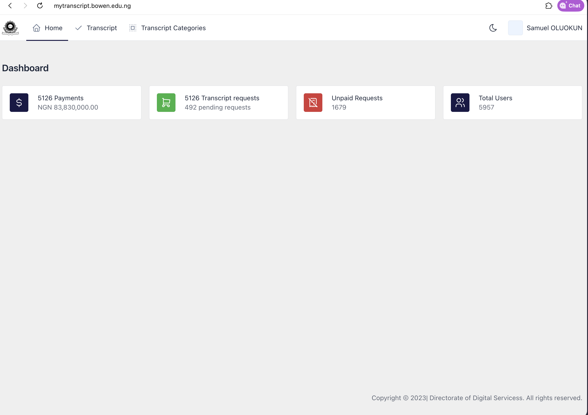

Case study · Bowen University
Transcript Management System
A university service that guides students and administrative teams through a high-volume transcript process.
5,957Users on the system
5,126Transcript requests
₦83.83MPayments processed
My contribution
Front-end developer on a five-person team. I built parts of the user-facing application in React and TypeScript, translating university transcript workflows into a digital service.
Product considerations
Students need to understand request steps, required information and progress at a glance. Administrators need reliable, structured data entry and clear status visibility.
Figures from the live admin dashboard. ₦83.83M is payments processed through the system, not personal revenue.
